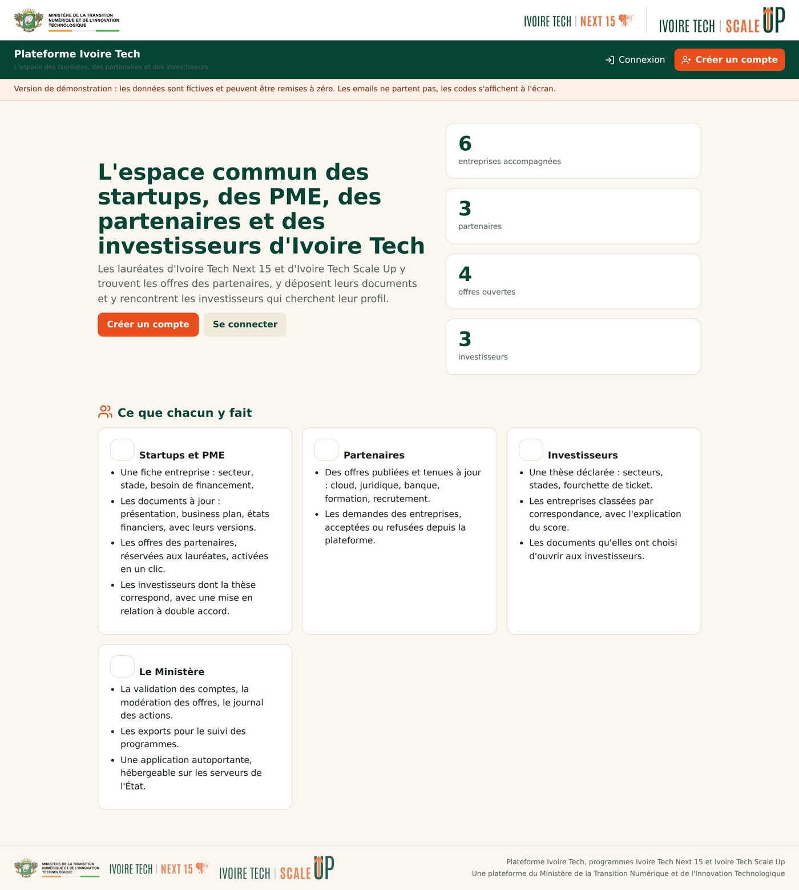
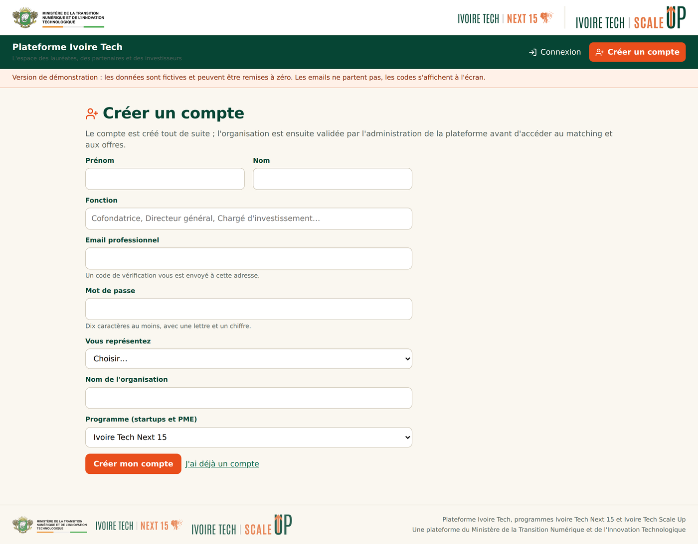
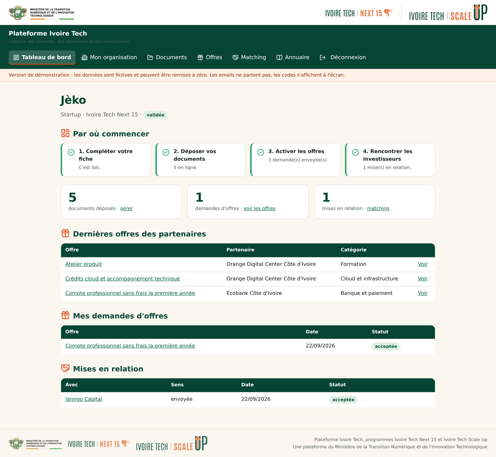
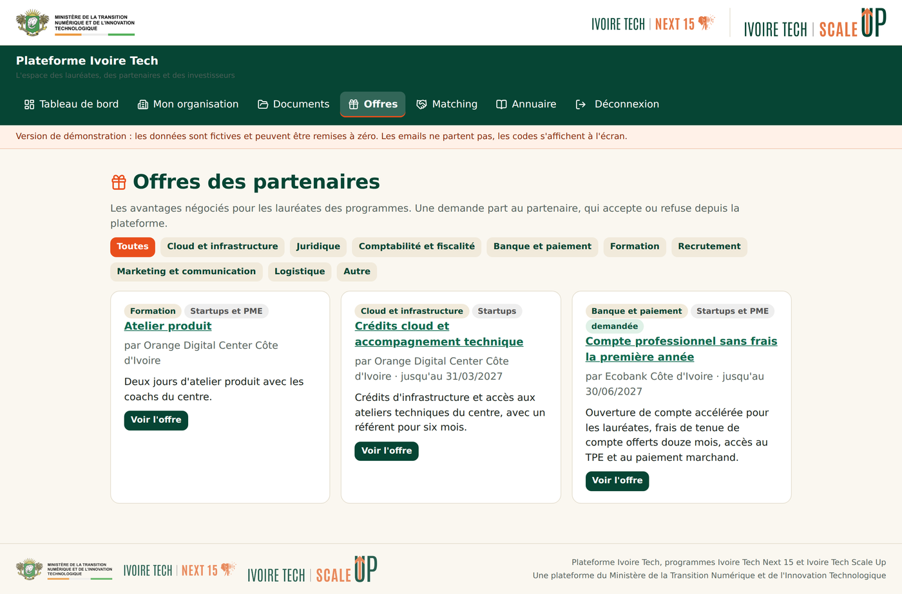
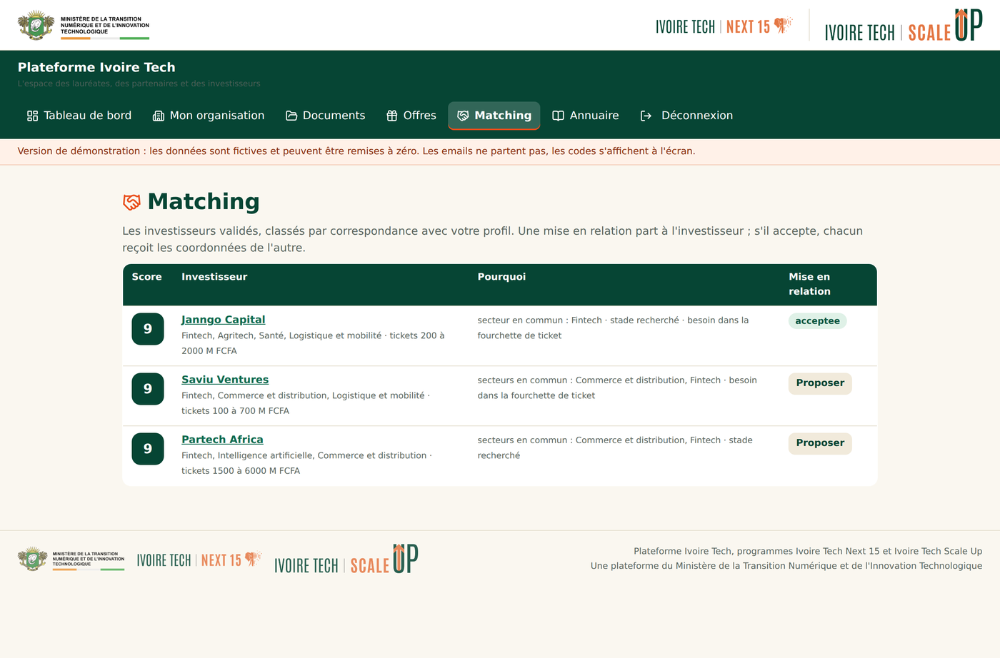
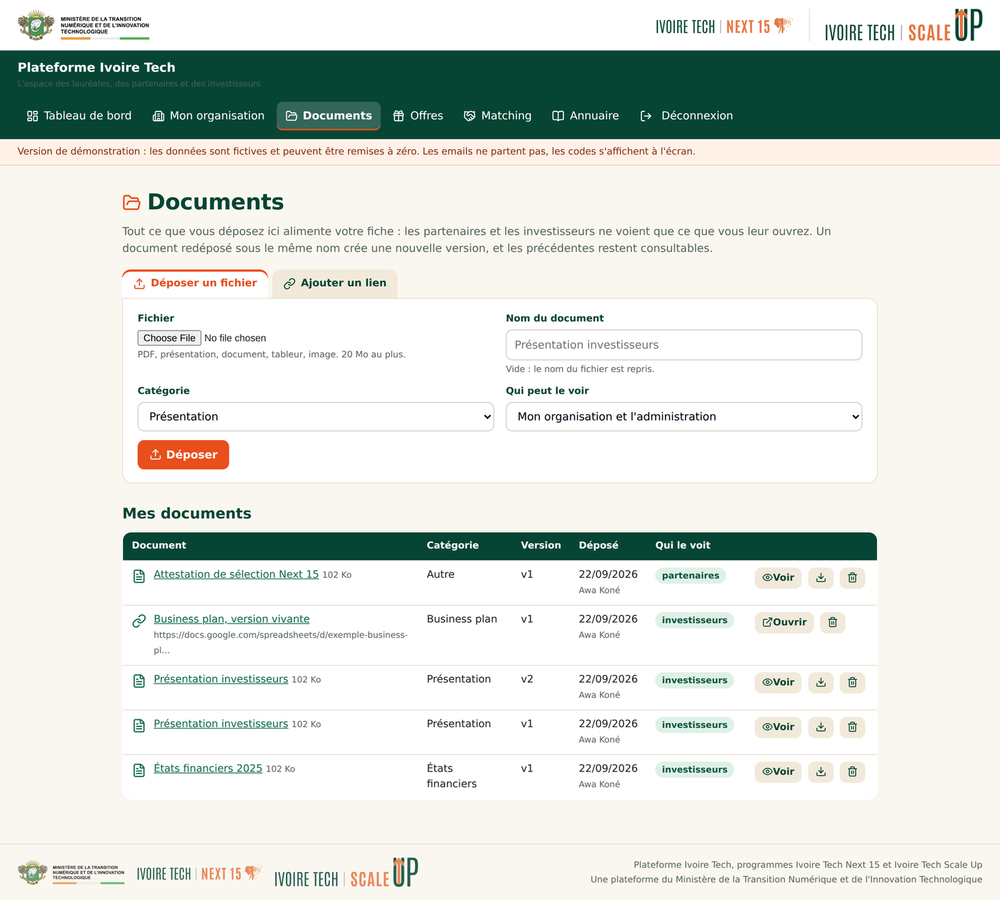
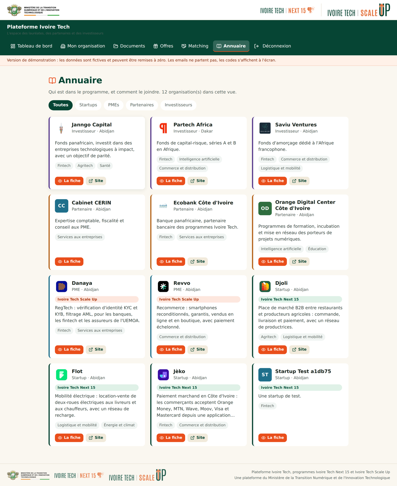
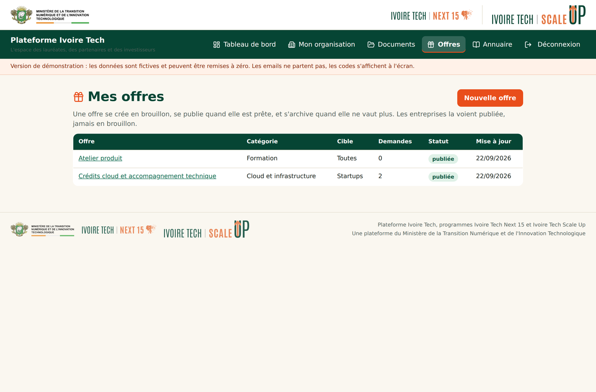
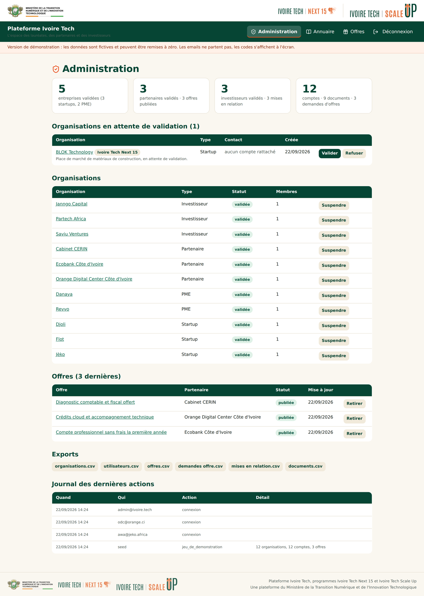

Ce qu'on y fait
Chacun crée son compte
Startup, PME, partenaire ou investisseur. Le Ministère valide avant d'ouvrir l'accès.
Les partenaires publient
Leurs offres, avec leurs conditions. Les entreprises les demandent en un clic.
Les documents vivent ici
Fichiers et liens, versionnés, et l'entreprise choisit qui les voit.
Les investisseurs cherchent
Les entreprises leur sont classées par correspondance, avec le score expliqué.
Le Ministère pilote
Validation des comptes, modération, journal des actions, export des données.
Hébergeable par l'État
Une application autonome, quatre dépendances, une base dans un fichier, une sauvegarde qui tient dans la copie d'un dossier.
Les écrans
L'accueil
La porte d'entrée : ce que le programme apporte, et les deux façons d'entrer, créer un compte ou se connecter.

La création de compte
Chacun s'inscrit seul, startup, PME, partenaire ou investisseur. Le Ministère valide avant d'ouvrir l'accès.

Le tableau de bord d'une lauréate
Un guide en quatre étapes, cochées au fur et à mesure, pour qu'une entreprise sache toujours ce qui lui reste à faire.

Les offres des partenaires
Banque, cloud, juridique, comptabilité : les avantages négociés, demandés en un clic.

La mise en relation
Les investisseurs voient les entreprises classées par correspondance, avec le détail du score.

Les documents
Fichiers et liens, versionnés, avec le choix de qui les voit. Les PDF et les images s'ouvrent dans le navigateur.

L'annuaire
Qui est dans le programme, avec quoi le contacter, filtré par secteur et par type.

Le côté partenaire
Publier une offre, choisir la cible, répondre aux demandes reçues.

L'administration du Ministère
Valider les comptes, modérer les offres, lire le journal des actions, exporter les données.
